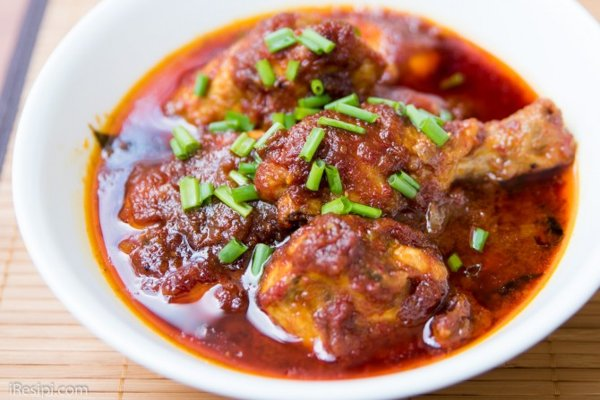

Ayam Masak Merah ala Kampung

Punyalah sedap sampai habis tinggal tulang je!
Ayam Masak Merah memang cukup sinonim dengan kenduri kahwin. Ada berbagai versi Ayam Masak Merah namun Ayam Masak Merah “Ala Kampung” tetap menjadi pujaan hati.
BAHAN UTAMA:
- 1/2 ekor ayam digoreng bersama garam kunyit
BAHAN DIKISAR:
- 1 biji bawang besar
- 3 ulas bawang putih
- 10 tangkai cili kering
BAHAN SOS:
- 3 sudu besar sos cili
- 2 sudu besar sos tomato
- 2 sudu besar sos tiram
- 1 sudu besar kicap
- 1 biji bawang besar (dipotong bulat)
- Herba 4 sekawan
CARA MEMBUAT:
- Tumiskan semua bahan kisar.
- Masukkan herba empat sekawan.
- Masukkan sos cili, sos tomato, sos tiram dan kicap. Kacau seketika.
- Masukkan sedikit air jika terlalu pekat.
- Masukkan ayam yang telah siap digoreng tadi.
- Akhir sekali masukkan bawang besar yang dipotong bulat-bulat. Masak seketika dan angkat. Hidangkan.
Sumber kredit: Liza Idris
To Main Page